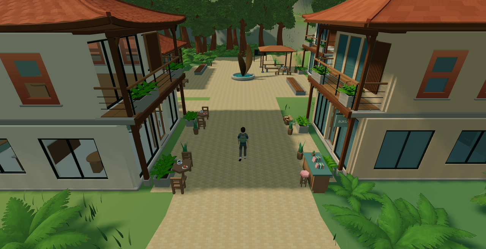

Transit Kingdom: inhabited frontages
17 imported CC0 prop types, 42 placements. The accepted buildings, terrain and circulation are preserved. Every image below is captured from the existing playable game. Owner visual approval pending.
Play local development version · Measurements and rollback · Asset inventory · Licenses
Market Street toward Telaga Awan
Telaga Awan gathering space
Future Guild reservation approach
Town and forest composition
Original explorer in the decorated street

Same recorded cameras, FOV, daylight, exposure, standard shadows and Glass B. Capture buffer 1280 × 656 at DPR 1, matching the available game area below the site header. Clouds and foliage continue their existing animation. No generated concept artwork or new landmark architecture.